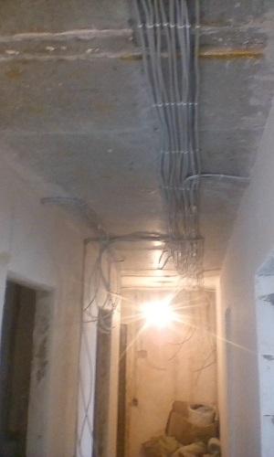

Качественный электромонтаж в Санкт-Петербурге и ленобласти, стаж 12 лет. Частный электрик, недорого и качественно.
Телефон - 8 904 642 08 57 Николай.

Электрик приморском районе, частный мастер.
Как вызвать электрика в приморском районе, и не переплатить.
Почему же так востребован электрик в приморском районе? Все очень просто, любая современная рабочая деятельность просто невозможно без электросети. Первом делом при ремонте зданий и строительстве жилья в СПБ продумывают прокладку коммуникаций, и особое место среди них занимает электропроводка. В век высоких технологий, когда все вокруг автоматизировано, и работает посредством приборов, просто немыслимо не использовать всю эту мощь из-за неисправности розетки.
Ведь почти весь ассортимент бытовой техники нуждается в подсоединении к питающей сети. Нужен электрик Приморском районе, звоните мне. Я уже много лет занимаюсь частными подрядными работами, связанными с электросетями. Я гарантирую свой профессиональный подход к электромонтажу. Не стоит брать на себя излишние хлопоты по подбору элементов сети, искать приемлемую мощность, обо всем этом я сам позабочусь. Многолетний опыт и наметанный глаз позволяет в считанные секунды определить причину поломки, локализовать ее и устранить все последствия. Все необходимые инструменты и материалы также всегда под рукой. Поэтому демонтаж не занимает много времени. Скорость, профессионализм и безопасность, вот что я гарантирую клиентом, вот на чем держится моя репутация. Итак, как же выбрать и не переплатить, на что обращать внимание при вызове электрика Приморского района.
Оплата услуг электрика.

Почему этот пункт статьи стоит первым, да потому что первым делом мои клиенты интересуется стоимостью услуг электрика в Приморском районе. И этот вопрос интересует заказчиков чаще всего. Особенно это касается телефонных звонков, думают, позвонят нескольким и выберут специалиста с невысокими запросами. Но это не всегда экономичный ход. Ведь лучше доверять такую важную деятельность проверенному кадру Приморского района, чем каждый раз жаловаться на не профессионализм прошлого мастера. Тем более по телефону не могут назвать точную стоимость, всегда говорят предварительную, чаще даже несколько завышенную. Точную цену могут назвать только при предварительном осмотре. Иногда уже после ремонта клиент заявляет о желании становить еще одну розетку, а для этого приходиться вновь вскрывать только, что собранные коробки, ведь вся сеть связана. Поэтому важно такие вопросы обговаривать заранее. Так как такая повторная работа будет уже посчитана двойной тарифной ставке. Причем не стоит думать, что кто-то хочет, кого то обмануть нет, все зависит от объема работ и всегда ограничивается предъявляемым прейскурантом электромонтажа Приморского района.
Инвентарь инструментов.
Электромонтаж без качественного инструмента неосуществим. Опытным путем на своем примере, я доказал что иностранные, ТОПовые марки гораздо эффективнее в таком роде работ. Это отражается не только на надежности починки, но и на скорости, то есть от отведенного времени остается еще приличный запас. Ели вы не желаете повтора неисправности, которые могут привести к замыканию, пожару имущества на принесенный инструментарий работника нужно также обращать внимание.
Работа без пыли.
Многие мои коллеги по Приморскому району предлагают услуги установки электрических элементов «без пыли». Это тоже некоторый рекламный ход. Ведь отладка электросетей требует сверления новых отверстий и углублений для розетки, поэтому присутствие пыли это временный сопроводительный эффект. Я не говорю о невозможности такой услуги, да можно провести все более аккуратно и привлечь специальные механизмы для этого. Только вот если объем работ небольшой, или помещение нежилое. Не стоит переплачивать за ненужную услугу.
Важность подготовительных работ.
Перед ремонтом электро элементов стоит разграничить рабочую зону. Что это означит, все предметы интерьера, которые стоят на пути к доступу лучше убрать, а те которые сдвинуть невозможно, укрыть. И для этого есть несколько причин:
- Ограниченное пространство стесняет работу;
- Сказывается на необходимом времени;
- Есть риск навредить имуществу, нанести царапину или другой дефект;
- Уборку проводить удобнее и быстрее.
До приезда мастера по ремонту электросетей в Приморском районе следует самостоятельно подготовить зону для работ, в итоге это позволяет сократить пребывание мастера в доме почти в два раза. А это весьма существенный факт при часовом окладе.
Почему стоит обратиться именно ко мне.
Находясь в данной сфере много лет, я знаю многие нюансы и могу выполнить такие заказы по электромонтажу в Приморском районе:
- Ремонт электрики в офисе, доме, даче или квартире;
- Отладка системы по проектной документации;
- Работы на производственных, торговых и складских площадках;
- Ремонт и сборка электрощитов;
- Установка люстр, светильников и бра;
- Полная и частичная замена элементов;
- Устройство датчиков движения, электро розеток перекрестных и проходных выключателей;
- Монтаж домофона;
- Настройка работ ворот и рольставней в автоматическом режиме.
10 причин отдать предпочтение именно в мою пользу.
Я представлю вашему вниманию список моих преимуществ, которыми далеко не каждый по Приморскому району электрик может похвастаться:
- Огромный опыт работы, который говорит об уровне моих работ;
- Каждый клиент имеет право на индивидуальный подход;
- Я гарантирую соблюдение вех норм электроустановок (ПУЭ И СНиП);
- Весь инструментальный ряд имеют сертификаты качества и достоверности, что они подлежат определённой марке;
- Быстрый срок, не отражающейся на качестве;
- Пунктуальность, я всегда назначаю оптимальный срок для выполнения заказа, и всегда укладываюсь во временные рамки;
- Не откажу в выполнении сопутствующих деятельностей;
- Низкие цены на услуги, гибкая политика в отношении цен;
- Полное соответствие проведённых установок согласно проектным чертежам;
- Налажена система поставки необходимого материала и деятельность с другими смежными организациями.
Если у вас еще остались сомнения более точную информацию можно получить по указанным телефонам.
 Поменять проводку в квартире.
Поменять проводку в квартире. Сколько будут стоить материалы.
Электрика в загородном доме стоимость работ.

Замена электропроводки в панельном доме.
Расценки на электропроводку квартир.
Замена проводки в хрущевке.
Электромонтаж в частном доме.
Электрика в загородном доме.
Сколько стоит замена электропроводки в двухкомнатной квартире?.
Электрик в новостройку однокомнатная квартира недорого.

Сколько стоит поменять электропроводку в 3-х комнатной квартире.